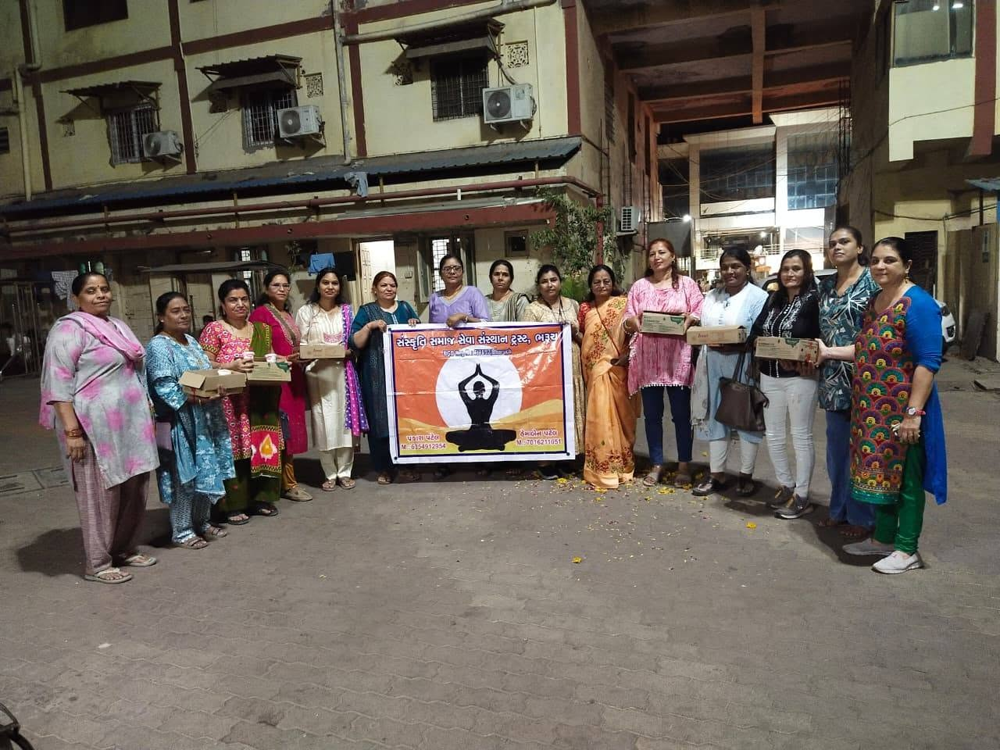
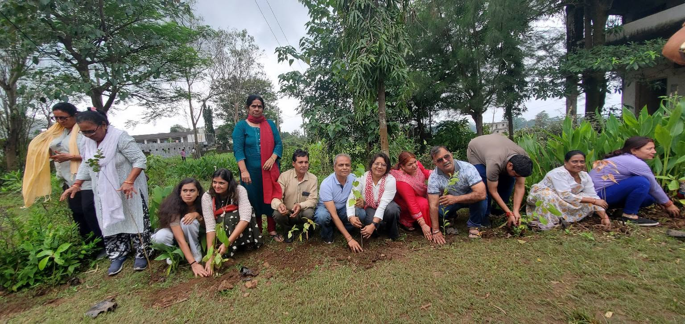
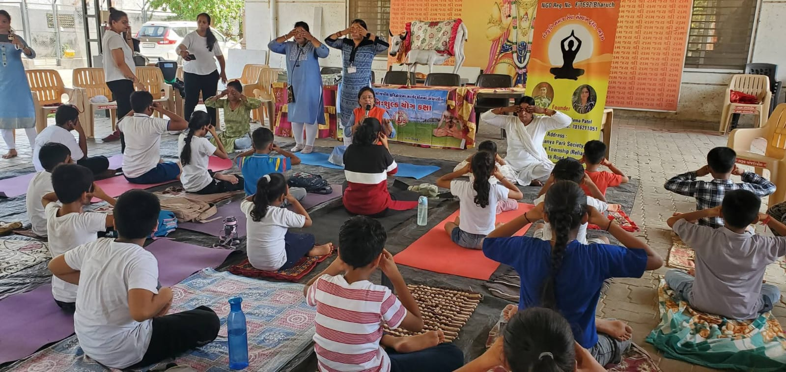
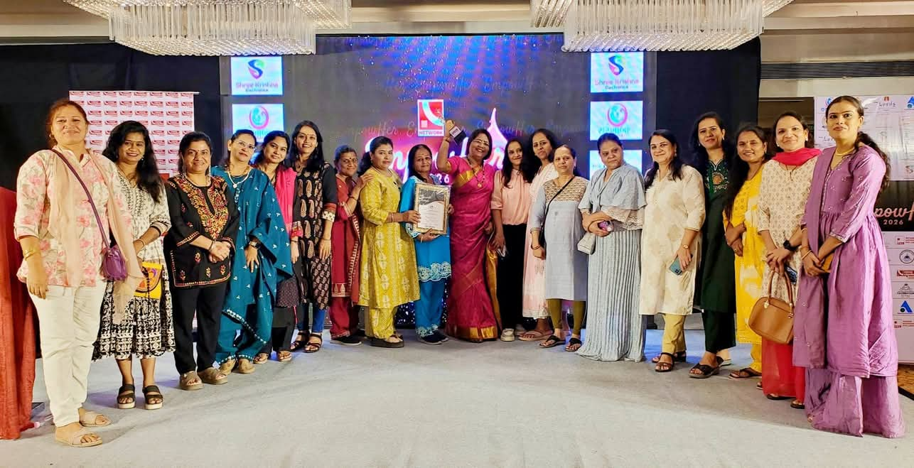
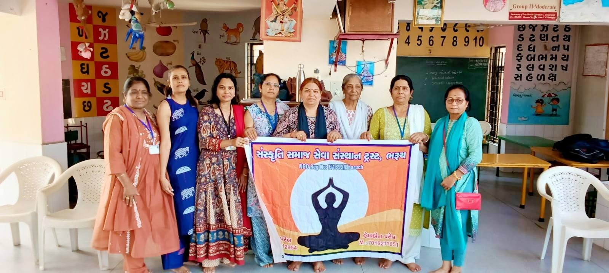
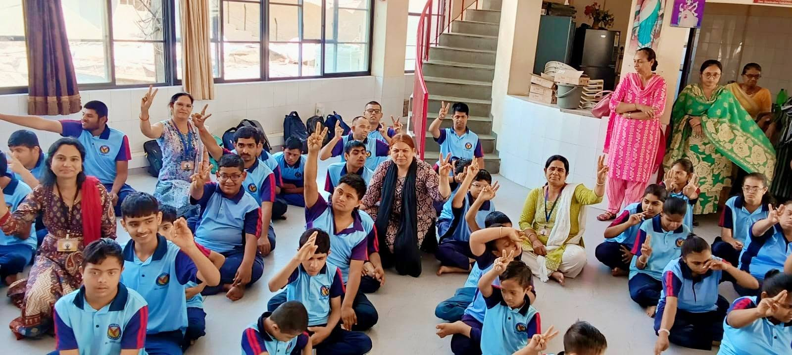
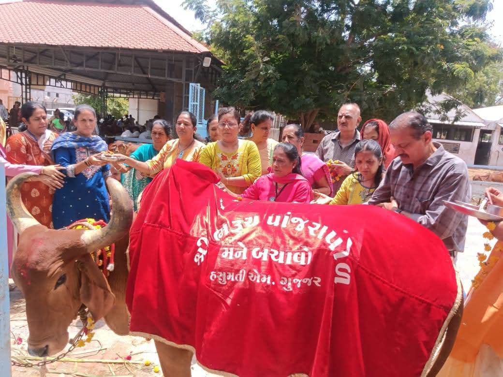
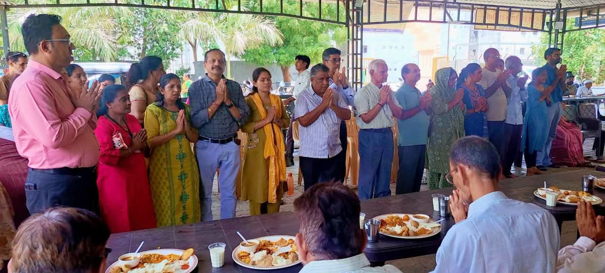

×

Support Our Cause
Scan this QR code to donate.
Name : Sanskruti Samaj Seva Sansthan Trust
UPI ID : Available Soon
Dedicated to community service, cultural preservation, and making a lasting impact across society.

Founded with the vision of uplifting the marginalized, our trust has grown from a small group of volunteers to a registered NGO driving real change.
Guided by compassionate leadership, our founders established this trust to serve as a bridge between resources and those who need them most.
We are proudly based in Bharuch, Gujarat, serving the local communities and expanding our reach to surrounding regions.

We actively organize tree plantation drives, cleanliness campaigns, and awareness programs to protect our natural surroundings and promote sustainable living.
View on Facebook
Physical and mental well-being is a priority. We host regular community Yoga sessions, health camps, and wellness workshops for all age groups.
View on Facebook
Providing skill development, legal awareness, and financial independence initiatives to empower women to lead self-sufficient lives.
View on Facebook
We believe education is the key to breaking the cycle of poverty. We distribute study materials, run free tutoring centers, and support underprivileged students.
View on Facebook
Dedicated to safeguarding the rights of children, preventing exploitation, and providing safe environments for them to play, learn, and grow.
View on Facebook
We operate a rescue and support helpline for injured or abandoned animals and birds, providing medical care and safe rehabilitation.
View on Facebook
No one should go to sleep hungry. We run regular food distribution drives in slums, hospitals, and low-income areas to provide nutritious meals.
View on Facebook
Scan this QR code to donate.
Name : Sanskruti Samaj Seva Sansthan Trust
UPI ID : Available Soon